Contents
- date conversion
- video of seal path
- path of seals
- salinity
- temperature
- p color plots
- time frame when seal stayed in one place
- ice formation rate
- ice formation seal 55
- ice formation seal 99
- mixed layer depth
- potential density
- static zone
- smooth
- better smoothing (press data into one day)
- ice growth smoothed 47 area 1
- ice concentration
- ice growth smoothed 47 area 2
- ice growth smoothed 55 area 1
- ice growth smoothed x time y
- clear some stuff
- to do
% group project "Seal data" % Group 2: Heiner Schmidt, Martin Mohrmann, Eleonora van Sitteren % script Heiner %import files load('C:\Users\Heiner\Desktop\Marine Project\BOX1_project\rawdata\seal_47.mat'); date47 = DATE; lat47 = LAT; lon47 = LON; sal47 = SAL; temp47 = TEMP; depth47 = Z; load('C:\Users\Heiner\Desktop\Marine Project\BOX1_project\rawdata\SIConc_Seals'); si47=SI_47; si55=SI_55; si99=SI_99; load('C:\Users\Heiner\Desktop\Marine Project\BOX1_project\rawdata\seal_55.mat'); date55 = DATE; lat55 = LAT; lon55 = LON; sal55 = SAL; temp55 = TEMP; depth55 = Z; load('C:\Users\Heiner\Desktop\Marine Project\BOX1_project\rawdata\seal_99.mat'); date99 = DATE; lat99 = LAT; lon99 = LON; sal99 = SAL; temp99 = TEMP; depth99 = Z; clear DATE LON LAT SAL TEMP Z info SI_47 SI_55 SI_99; %end import
date conversion
day47=date47-datenum(2008,2,4); day55=date55-datenum(2008,2,7); day99=date99-datenum(2008,2,5); d47=datetime(date47, 'ConvertFrom', 'datenum'); d55=datetime(date55, 'ConvertFrom', 'datenum'); d99=datetime(date99, 'ConvertFrom', 'datenum');
video of seal path
salinity and temp at 10m depth
close; figure(1); scatter(lon47,lat47,5,temp47(3,:)); hold; scatter(lon55,lat55,5,temp55(3,:)); hold on; scatter(lon99,lat99,5,temp99(3,:)); xlabel('Longitude'); ylabel('Latidude'); colorbar; title('Temp all seals'); print('C:\Users\Heiner\Desktop\Marine Project\BOX1_project\figures\tempallseals', '-dsvg'); close; figure(1); scatter(lon47,lat47,5,sal47(3,:)); hold on; scatter(lon55,lat55,5,sal55(3,:)); hold on; scatter(lon99,lat99,5,sal99(3,:)); xlabel('Longitude'); ylabel('Latidude'); colorbar; caxis([34 34.6]); title('salinity of all seals'); print('C:\Users\Heiner\Desktop\Marine Project\BOX1_project\figures\salallseals', '-dsvg'); % v=VideoWriter('sealpath.avi'); % v.FrameRate=10; % open(v); % t=1; % for t=1:length(lon47); % scatter(lon47(t),lat47(t)); % xlabel('Longitude'); % ylabel('Latidude'); % zlabel('Depth'); % xlim([-5 40]); % ylim([-70 -54]); % frame=getframe(gcf); % writeVideo(v,frame); % end % close(v); % scatter(lon47,lat47, lon55,lat55,lon99,lat99); %path of the seals % legend('seal47','seal55','seal99'); % title('Seal path');
Current plot released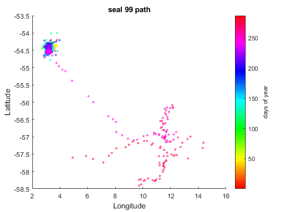
path of seals
scatter(lon47,lat47,5,day47);
title('seal 47 path');
xlabel('Longitude');
ylabel('Latitude');
h47=colorbar;
ylabel(h47,'days of year');
colormap hsv;
print('C:\Users\Heiner\Desktop\Marine Project\BOX1_project\figures\seal47path','-dsvg');
scatter(lon47,lat47,5,temp47(21,:));
title('seal 47 path');
xlabel('Longitude');
ylabel('Latitude');
h47=colorbar;
ylabel(h47,'temperature at 100m depth');
colormap jet;
print('C:\Users\Heiner\Desktop\Marine Project\BOX1_project\figures\seal47pathtempat100','-dsvg');
scatter(lon55,lat55,5,day55);
title('seal 55 path');
xlabel('Longitude');
ylabel('Latitude');
h55=colorbar;
ylabel(h55,'days of year');
colormap hsv;
print('C:\Users\Heiner\Desktop\Marine Project\BOX1_project\figures\seal55path','-dsvg');
scatter(lon99,lat99,5,day99);
title('seal 99 path');
xlabel('Longitude');
ylabel('Latitude');
h99=colorbar;
ylabel(h99,'days of year');
colormap hsv;
print('C:\Users\Heiner\Desktop\Marine Project\BOX1_project\figures\seal99path','-dsvg');
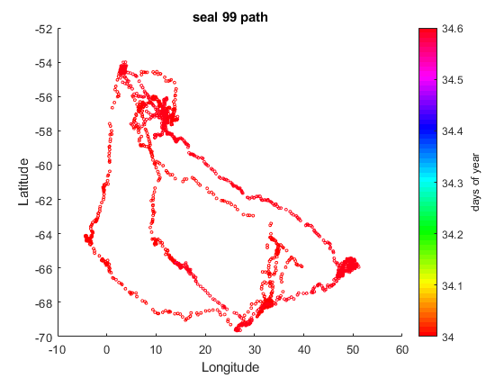 salinity
XTickVec=[datenum(2008,2,4),datenum(2008,3:9,1),datenum(2008,9,23)];
contourf(date47,depth47,sal47, 34:0.2:35.5);
set(gca, 'ydir', 'reverse');
ylabel('depth [m]');
xlabel('day of year');
colormap jet;
c=colorbar;
ylabel(c,'salinity [psu]');
title('seal47');
set(gca,'XTick',XTickVec);
datetick('x','dd.mm.','keepticks');
print('C:\Users\Heiner\Desktop\Marine Project\BOX1_project\figures\seal47salinitytime','-dsvg');
XTickVec=[datenum(2008,2,7),datenum(2008,3:10,1),datenum(2008,11,11)];
contourf(date55,depth55,sal55, 34:0.2:35.5);
set(gca, 'ydir', 'reverse');
ylabel('depth [m]');
xlabel('day of year');
colormap jet;
c=colorbar;
ylabel(c,'salinity [psu]');
title('seal55');
set(gca,'XTick',XTickVec);
datetick('x','dd.mm.','keepticks');
print('C:\Users\Heiner\Desktop\Marine Project\BOX1_project\figures\seal55salinitytime','-dsvg');
XTickVec=[datenum(2008,2,5),datenum(2008,3:10,1),datenum(2008,11,17)];
contourf(date99,depth99,sal99, 33:0.2:37);
set(gca, 'ydir', 'reverse');
ylabel('depth [m]');
xlabel('day of year');
colormap jet;
c=colorbar;
ylabel(c,'salinity [psu]');
title('seal99');
set(gca,'XTick',XTickVec);
datetick('x','dd.mm.','keepticks');
print('C:\Users\Heiner\Desktop\Marine Project\BOX1_project\figures\seal99salinitytime','-dsvg');
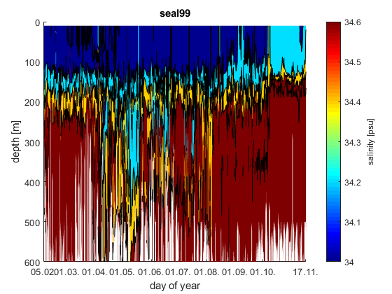 temperature
XTickVec=[datenum(2008,2,4),datenum(2008,3:9,1),datenum(2008,9,23)];
[~,c]=contourf(date47,depth47,temp47, -2:0.5:2);
set(gca, 'ydir', 'reverse');
ylabel('depth [m]');
xlabel('day of year');
colormap jet;
c.LineWidth=0.1;
c=colorbar;
ylabel(c,'temp [°C]');
title('seal47');
set(gca,'XTick',XTickVec);
datetick('x','dd.mm.','keepticks');
print('C:\Users\Heiner\Desktop\Marine Project\BOX1_project\figures\seal47temptime','-dsvg');
XTickVec=[datenum(2008,2,7),datenum(2008,3:10,1),datenum(2008,11,11)];
[~,c]=contourf(date55,depth55,temp55, -2:0.5:2);
set(gca, 'ydir', 'reverse');
ylabel('depth [m]');
xlabel('day of year');
colormap jet;
c.LineWidth=0.1;
c=colorbar;
ylabel(c,'temp [°C]');
title('seal55');
set(gca,'XTick',XTickVec);
datetick('x','dd.mm.','keepticks');
print('C:\Users\Heiner\Desktop\Marine Project\BOX1_project\figures\seal55temptime','-dsvg');
XTickVec=[datenum(2008,2,5),datenum(2008,3:10,1),datenum(2008,11,17)];
[~,c]=contourf(date99,depth99,temp99, -2:0.5:2);
set(gca, 'ydir', 'reverse');
ylabel('depth [m]');
xlabel('day of year');
colormap jet;
c.LineWidth=0.1;
c=colorbar;
ylabel(c,'temp [°C]');
title('seal99');
set(gca,'XTick',XTickVec);
datetick('x','dd.mm.','keepticks');
print('C:\Users\Heiner\Desktop\Marine Project\BOX1_project\figures\seal99temptime','-dsvg');
clear m h47 h55 h99 c XTickVec;
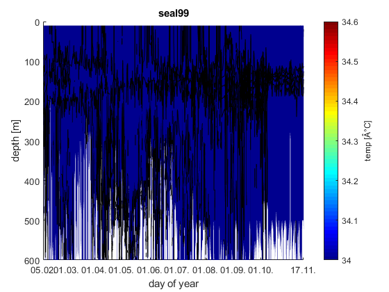 p color plots
pcolor(day47,depth47,temp47);
shading interp;
set(gca, 'ydir', 'reverse');
ylabel('depth [m]');
xlabel('day of year');
title('seal47');
c=colorbar;
ylabel(c,'temperature [°C]');
pcolor(day55,depth55,temp55);
shading interp;
set(gca, 'ydir', 'reverse');
ylabel('depth [m]');
xlabel('day of year');
title('seal55');
c=colorbar;
ylabel(c,'temperature [°C]');
pcolor(day99,depth99,temp99);
shading interp;
set(gca, 'ydir', 'reverse');
ylabel('depth [m]');
xlabel('day of year');
title('seal99');
c=colorbar;
ylabel(c,'temperature [°C]');
clear c;
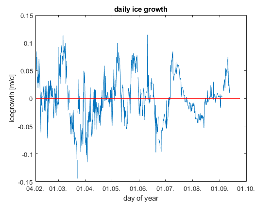 time frame when seal stayed in one place
%seal 47 start 98.24 end: 150.38 day47(219); day47(400); %seal 55 start: 143.61 end: 210.67 day55(355); day55(562); %seal 99 start 35.17 end: 275.56 day99(1); day99(665); clear ans;
ice formation rate
%seal 47 rho_0=1027; %kg m-3 rho_i=920; %kg m-3 S_i=10; %psu h_0=100; %m % S_0=sum(sal47(3:21,250:260)); %salinity from date250 to date350 % S_f=sum(sal47(3:21,350:360)); % h_i = (rho_0*h_0*S_0-rho_0*h_0*S_f)/(rho_i*S_i-rho_0*S_f); %net ice formation rate over the time frame % h_id = h_i/(date47(350)-date47(250)); %ice formation rate by day clear h_if h_if=zeros(1,length(lon47)-30); for t=1:(length(date47)-30) S_0=sum(sal47(3:21,t)); S_f=sum(sal47(3:21,t+30)); h_if(t) = ((rho_0*h_0*S_0-rho_0*h_0*S_f)/(rho_i*S_i-rho_0*S_f))/(date47(t+30)-date47(t)); end plot(date47(1:length(date47)-30),h_if); %daily ice growth (difference between day t and day t+30) line([date47(1) date47(length(date47))], [0 0], 'color','r'); XTickVec=[datenum(2008,2,4),datenum(2008,3:10,1)]; ylabel('icegrowth [m/d]'); xlabel('day of year'); set(gca,'XTick',XTickVec); datetick('x','dd.mm.','keepticks'); title('daily ice growth seal 47'); print('C:\Users\Heiner\Desktop\Marine Project\BOX1_project\figures\seal47icegrowth','-dsvg') clear rho_0 rho_i S_i S_0 S_f h_0 h_id t h_if XTickVec;

ice formation seal 55
rho_0=1027; %kg m-3 rho_i=920; %kg m-3 S_i=10; %psu h_0=100; %m clear h_if h_if=zeros(1,length(lon55)-30); for t=1:(length(date55)-30) S_0=sum(sal55(3:21,t)); S_f=sum(sal55(3:21,t+30)); h_if(t) = ((rho_0*h_0*S_0-rho_0*h_0*S_f)/(rho_i*S_i-rho_0*S_f))/(date55(t+30)-date55(t)); end plot(date55(1:length(date55)-30),h_if); %daily ice growth (difference between day t and day t+30) line([date55(1) date55(length(date55))], [0 0], 'color','r'); XTickVec=[datenum(2008,2,4),datenum(2008,3:10,1)]; ylabel('icegrowth [m/d]'); xlabel('day of year'); title('seal55 - daily ice growth as difference between time frame t and t+30'); set(gca,'XTick',XTickVec); datetick('x','dd.mm.','keepticks'); title('seal47 - daily ice growth as difference between time frame t and t+30'); set(gca,'XTick',XTickVec); datetick('x','dd.mm.','keepticks'); print('C:\Users\Heiner\Desktop\Marine Project\BOX1_project\figures\seal55icegrowth','-dsvg') clear rho_0 rho_i S_i S_0 S_f h_0 XTickVec t h_if;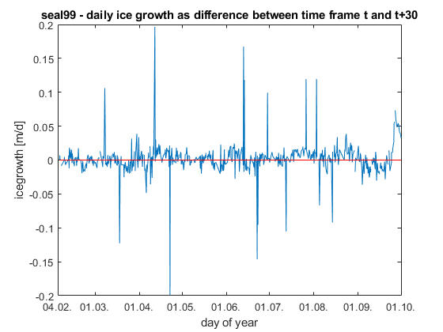
ice formation seal 99
rho_0=1027; %kg m-3 rho_i=920; %kg m-3 S_i=10; %psu h_0=100; %m clear h_if h_if=zeros(1,length(lon99)-30); for t=1:(length(date99)-30) S_0=sum(sal99(3:21,t)); S_f=sum(sal99(3:21,t+30)); h_if(t) = ((rho_0*h_0*S_0-rho_0*h_0*S_f)/(rho_i*S_i-rho_0*S_f))/(date99(t+30)-date99(t)); end plot(date99(1:length(date99)-30),h_if); %daily ice growth (difference between day t and day t+30) line([date99(1) date99(length(date99))], [0 0], 'color','r'); XTickVec=[datenum(2008,2,4),datenum(2008,3:10,1)]; ylabel('icegrowth [m/d]'); xlabel('day of year'); title('seal99 - daily ice growth as difference between time frame t and t+30'); set(gca,'XTick',XTickVec); datetick('x','dd.mm.','keepticks'); print('C:\Users\Heiner\Desktop\Marine Project\BOX1_project\figures\seal99icegrowth','-dsvg') clear rho_0 rho_i S_i S_0 S_f h_0 h_if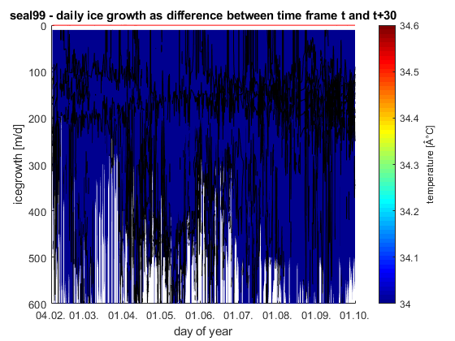
mixed layer depth
% Seal data project MAR440 HT-18 Eleonora Van Sitteren Group 2 Z_matrix = zeros(length(depth47),length(lon47)); for i=1:length(lon47) Z_matrix (:,i) = depth47; end
LAT_row = lat47;
LAT_matrix = zeros (length(47),length(lon47)); for o=1:length(depth47) LAT_matrix (o,:) = LAT_row; end
P = z2p80(Z_matrix,LAT_matrix); %gives the pressure P (dbars) at a depth D (m) at some latitude LAT (degrees).
[SPV,K,SterAn] = alpha(P,temp47,sal47);
PTEMP = theta(P,temp47,sal47); %is the local potential temperature
% at reference pressure P0 using Bryden 1973 polynomial for
% adiabatic lapse rate and Runge-Kutta fourth order integration
% algorithm.sig = sigma(P,temp47,sal47,1);
% SIGMA Density of Seawater
clear rho_0 rho_i S_i S_0 S_f h_0 XTickVec t h_if; %% mixed layer depth % Seal data project MAR440 HT-18 Eleonora Van Sitteren Group 2 Z_matrix = zeros(length(depth47),length(lon47)); for i=1:length(lon47) Z_matrix (:,i) = depth47; end
LAT_row = lat47;
LAT_matrix = zeros (length(47),length(lon47)); for o=1:length(depth47) LAT_matrix (o,:) = LAT_row; end
P = z2p80(Z_matrix,LAT_matrix); %gives the pressure P (dbars) at a depth D (m) at some latitude LAT (degrees).
[SPV,K,SterAn] = alpha(P,temp47,sal47);
PTEMP = theta(P,temp47,sal47); %is the local potential temperature
% at reference pressure P0 using Bryden 1973 polynomial for
% adiabatic lapse rate and Runge-Kutta fourth order integration
% algorithm.sig = sigma(P,temp47,sal47,1);
% SIGMA Density of Seawater % % SIG = SIGMA( P , T , S , [Pref] ) % % computation of density of seawater % referenced to arbitrary pressures % based on 'alpha.m' % % input : P : pressure [dbar] % T : in situ temperature [degC] IPTS-68 % S : salinity [psu] IPSS-78 % Pref [p] : optional reference pressure % use: SIGMA(Pref,THETA(P,T,S,Pref),S) % % output : SIG : density of seawater at pressure P (adiabatic) % [kg/m^3]
g = gravit (LAT_matrix);
[ssp,info] = snd_spd(P,temp47,sal47,'del grosso',LAT_matrix); % 2) SND_SPD(P,T,S,'del grosso',lat) returns the sound speed (m/sec) % given vectors of salinity (ppt), temperature (deg C), and % PRESSURE (dbar) using the Del Grosso equation: % % Del Grosso, "A New Equation for the speed of sound in Natural % Waters", J. Acoust. Soc. Am. 56#4 (1974).
dsig = diff (sig); dz = diff (Z_matrix); dp = diff (P);
N2 = (-g(1:length(depth47)-1,:)./sig(1:length(depth47)-1,:)).*(dsig./dz-1./(ssp(1:length(depth47)-1,:).^2).*dp./dz);
[Y,I] = min(N2);
mixed_depth = zeros (1,length(lon47)); for h=1:length(lon47) mixed_depth (h) = Z_matrix(I(h)); end
XTickVec=[datenum(2008,2,4),datenum(2008,3:9,1),datenum(2008,9,23)]; contourf(date47,depth47,sal47, 34:0.2:35.5); set(gca, 'ydir', 'reverse'); ylabel('depth [m]'); xlabel('day of year'); colormap jet; c=colorbar; ylabel(c,'salinity [psu]'); title('seal47'); set(gca,'XTick',XTickVec); datetick('x','dd.mm.','keepticks'); hold plot(date47,mixed_depth,'LineWidth',1.5,'color','m'); print('C:\Users\Heiner\Desktop\Marine Project\BOX1_project\figures\mixedlayer+sal47','-dsvg'); close
plot(date47,mixed_depth); set(gca, 'ydir', 'reverse'); ylabel('depth [m]'); xlabel('day of year'); title('seal47'); set(gca,'XTick',XTickVec); datetick('x','dd.mm.','keepticks'); print('C:\Users\Heiner\Desktop\Marine Project\BOX1_project\figures\mixedlayer','-dsvg'); clear dp dsig dz g h i l info K LAT_matrix LAT_row N2 o P PTEMP sig SPV ssp SterAn Y Z_matrix;
potential density
d0_47=sw_dens0(sal47,temp47); contourf(date47,depth47,d0_47, 1027:0.05:1028); % shading interp colorbar; ml47=zeros(1,length(lon47)); clear t u; for t=1:length(lon47) for u=3:length(depth47) if depth47(u) not 'NaN'; if +d0_47(u,t)-d0_47(3,t)>0.02 ml47(t)=depth47(u); break end end end end XTickVec=[datenum(2008,2,4),datenum(2008,3:9,1),datenum(2008,9,23)]; plot(date47,ml47); % mixed layer depth set(gca, 'ydir', 'reverse'); ylabel('depth [m]'); xlabel('day of year'); title('seal47'); set(gca,'XTick',XTickVec); datetick('x','dd.mm.','keepticks'); print('C:\Users\Heiner\Desktop\Marine Project\BOX1_project\figures\mixedlayer_dens0','-dsvg'); contourf(date47,depth47,d0_47-d0_47(3,:), -0.1:0.2:1); set(gca, 'ydir', 'reverse'); colorbar; ylabel('depth [m]'); xlabel('day of year'); title('seal47'); set(gca,'XTick',XTickVec); datetick('x','dd.mm.','keepticks'); print('C:\Users\Heiner\Desktop\Marine Project\BOX1_project\figures\dens0_diff','-dsvg'); clear t l c ans u; % %% ice formation with ML depth... V_0 replaced with mixed layer depth % %seal 47 % rho_0=1027; %kg m-3 % rho_i=920; %kg m-3 % S_i=10; %psu % % S_0=sum(sal47(3:21,250:260)); %salinity from date250 to date350 % % S_f=sum(sal47(3:21,350:360)); % % h_i = (rho_0*mixed_*S_0-rho_0*h_0*S_f)/(rho_i*S_i-rho_0*S_f); %net ice formation rate over the time frame % % h_id = h_i/(date47(350)-date47(250)); %ice formation rate by day % clear h_if % h_if=zeros(1,length(lon47)-30); % for t=1:(length(date47)-30) % S_0=sum(sal47(3:21,t)); % S_f=sum(sal47(3:21,t+30)); % h_if(t) = ((rho_0*mixed_depth(t)*S_0-rho_0*mixed_depth(t)*S_f)/(rho_i*S_i-rho_0*S_f))/(date47(t+30)-date47(t)); % end % % plot(date47(1:length(date47)-30),h_if); %daily ice growth (difference between day t and day t+30) % line([date47(1) date47(length(date47))], [0 0], 'color','r'); % XTickVec=[datenum(2008,2,4),datenum(2008,3:10,1)]; % ylabel('icegrowth [m/d]'); % xlabel('day of year'); % title('ice formation rate seal 47. h_0 = mixed layer depth'); % set(gca,'XTick',XTickVec); % datetick('x','dd.mm.','keepticks'); % % clear rho_0 rho_i S_i S_0 S_f h_0 t I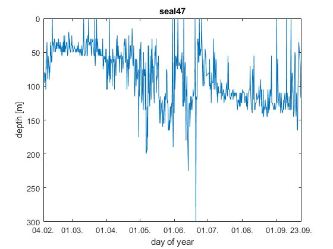
static zone
%dates 219-400 figure(2); hold off; XTickVec=datenum(2008,4:6,1); contourf(date47(219:400),depth47,d0_47(:,219:400),1027:0.05:1028); set(gca, 'ydir', 'reverse'); ylabel('depth [m]'); xlabel('day of year'); colormap jet; c=colorbar; ylabel(c,'potential density [kg m-3'); title('seal47 sal in static zone, red line = most static zone'); set(gca,'XTick',XTickVec); datetick('x','dd.mm.','keepticks'); hold on; plot(date47(219:400),ml47(219:400),'color','r'); hold off; close;
smooth
sal47s=smooth2a(sal47,1 ,100); %entered matrix, number of rows, number of columns subplot(1,2,1); contourf(date47,depth47,sal47,34:0.2:35.5); colorbar; caxis([34 35.5]); hold on subplot(1,2,2); contourf(date47,depth47,sal47s,34:0.2:35.5) colorbar; caxis([34 35.5]); hold off close; rho_0=1027; %kg m-3 rho_i=920; %kg m-3 S_i=10; %psu h_0=100; %m for t=1:(length(date47)-30) S_0=sum(sal47s(3:21,t)); S_f=sum(sal47s(3:21,t+30)); h_if(t) = ((rho_0*h_0*S_0-rho_0*h_0*S_f)/(rho_i*S_i-rho_0*S_f))/(date47(t+30)-date47(t)); end plot(date47(1:length(date47)-30),h_if); %daily ice growth (difference between day t and day t+30) line([date47(1) date47(length(date47))], [0 0], 'color','r'); XTickVec=[datenum(2008,2,4),datenum(2008,3:10,1)]; ylabel('icegrowth [m/d]'); xlabel('day of year'); set(gca,'XTick',XTickVec); datetick('x','dd.mm.','keepticks'); title('daily ice growth'); clear rho_0 rho_i h_0 S_0 S_f S_i t c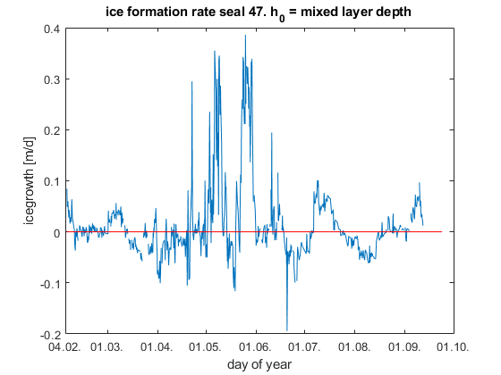
better smoothing (press data into one day)
-----FUNCTION SMOOTHDAY ---- sal47t=transpose(sal47); for t=1:length(depth47) tt=timetable(d47,sal47t(:,t)); tt=retime(tt,'daily', 'mean'); tt=timetable2table(tt); %row 1: time row 2: salinity at depth t timen47=tt(:,1); %new date format showing each day with data once tt(:,1)=[]; %delete time column out of table tt=table2array(tt); %transform sal table (1x57) to sal array (1x57) sal47s2(t,:)=tt; %add sal column to a new array sal47s2 end XTickVec=[datenum(2008,2,4),datenum(2008,3:9,1),datenum(2008,9,23)]; timen47=table2array(timen47); time47=datenum(timen47); -------------------
[sal47s2,time47, timen47]=smoothday(sal47,depth47,date47);
contourf(time47,depth47,smooth2a(sal47s2,1,15), 33.8:0.2:35.5);
set(gca, 'ydir', 'reverse');
ylabel('depth [m]');
xlabel('day of year');
colormap jet;
c=colorbar;
ylabel(c,'salinity [psu]');
title('seal47 mean value at each day');
set(gca,'XTick',XTickVec);
datetick('x','dd.mm.','keepticks');
print('C:\Users\Heiner\Desktop\Marine Project\BOX1_project\figures\seal47salinitytimesmoothday','-dsvg');
clear t;
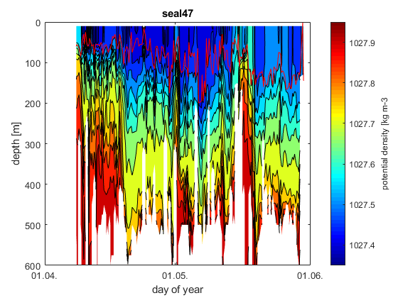 ice growth smoothed 47 area 1
close; ig47=ice_growth(sal47s2,time47,1); %call function ice_growth subplot(2,2,1); XTickVec=datenum(2008,2:10,1); plot(time47(1:length(ig47)),smooth2a(ig47,1,15)); %smoothed over 3 days line([time47(1) time47(length(time47))], [0 0], 'color','r'); line([time47(65) time47(65)], [-0.2 0.2], 'color','r'); line([time47(117) time47(117)], [-0.2 0.2], 'color','r'); ylabel('icegrowth [m/d]'); xlabel('day of year'); title('ice formation rate '); set(gcf,'position',[100 100 900 300]); set(gca,'XTick',XTickVec); datetick('x','dd.mm.','keepticks'); hold; subplot(2,2,2); contourf(time47,depth47,sal47s2, 34:0.2:35.5); set(gca, 'ydir', 'reverse'); ylabel('depth [m]'); xlabel('day of year'); line([time47(65) time47(65)], [0 600], 'color','black', 'LineWidth', 2); line([time47(117) time47(117)], [0 600], 'color','black', 'LineWidth', 2); line([time47(1) time47(length(time47))], [100 100]); colormap jet; title('salinity'); set(gca,'XTick',XTickVec); datetick('x','dd.mm.','keepticks'); hold; subplot(2,2,3); %sum of salinity in upper 100 m plot(time47, nansum(sal47s2(1:21,:))); ylim([645 660]); ylabel('Sum of salinity in upper 100 m'); xlabel('day of year'); line([time47(65) time47(65)], [0 700], 'color','black', 'LineWidth', 2); line([time47(117) time47(117)], [0 700], 'color','black', 'LineWidth', 2); set(gcf,'position',[100 100 900 300]) title('Sum of salinity'); set(gca,'XTick',XTickVec); datetick('x','dd.mm.','keepticks'); subplot(2,2,4); %sealpath scatter(lon47,lat47,5,day47); title('seal 47 path'); xlabel('Longitude'); ylabel('Latitude'); h47=colorbar; ylabel(h47,'days of year'); colormap jet; line([30 36], [-69 -69]); line([30 30], [-69 -64]); line([30 36], [-64 -64]); line([36 36], [-69 -64]); set(gcf, 'Position', get(0, 'Screensize')); mean1=mean(ig47(65:117)); var1=var(ig47(65:117)); sum(ig47(65:117)); % ice growth from 4.4. to 30.5. (stable period)
Current plot held Current plot held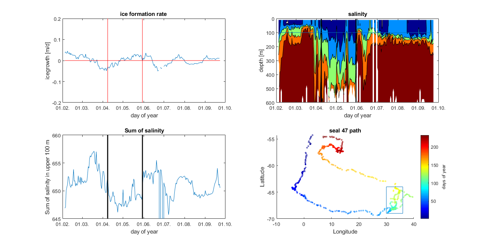
ice concentration
[si47s,time47, timen47]=smoothday(si47,1,date47);
plot(time47, si47s);
ylabel('sea ice concentration');
xlabel('day of year');
line([time47(65) time47(65)], [0 1], 'color','black', 'LineWidth', 2);
line([time47(117) time47(117)], [0 1], 'color','black', 'LineWidth', 2);
set(gcf,'position',[100 100 900 300])
% title('Sum of salinity');
set(gca,'XTick',XTickVec);
datetick('x','dd.mm.','keepticks');
mean_si=nanmean(si47s(65:117));
var_si=nanvar(si47s(65:117));
%seal 99
[si99s,time99, timen99]=smoothday(si99,1,date99);
plot(time99, si99s);
ylabel('sea ice concentration');
xlabel('day of year');
% line([time99(65) time99(65)], [0 1], 'color','black', 'LineWidth', 2);
% line([time99(117) time99(117)], [0 1], 'color','black', 'LineWidth', 2);
set(gcf,'position',[100 100 900 300])
% title('Sum of salinity');
set(gca,'XTick',XTickVec);
datetick('x','dd.mm.','keepticks');
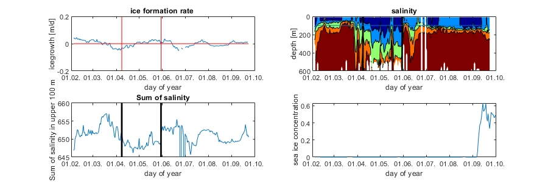 ice growth smoothed 47 area 2
close; ig47=ice_growth(sal47s2,time47,1); %call function ice_growth subplot(2,2,1); XTickVec=datenum(2008,8:10,1); plot(time47(196:223),smooth(ig47(196:223),1)); %not smoothed % line([time47(1) time47(length(time47))], [0 0], 'color','r'); % line([time47(65) time47(65)], [-0.2 0.2], 'color','r'); % line([time47(117) time47(117)], [-0.2 0.2], 'color','r'); ylabel('icegrowth [m/d]'); xlabel('day of year'); title('ice formation rate '); set(gcf,'position',[100 100 900 300]); set(gca,'XTick',XTickVec); datetick('x','dd.mm.','keepticks'); hold; subplot(2,2,2); contourf(time47(196:223),depth47,sal47s2(:,196:223), 34:0.2:35.5); set(gca, 'ydir', 'reverse'); ylabel('depth [m]'); xlabel('day of year'); % line([time47(65) time47(65)], [0 600], 'color','black', 'LineWidth', 2); % line([time47(117) time47(117)], [0 600], 'color','black', 'LineWidth', 2); % line([time47(1) time47(length(time47))], [100 100]); colormap jet; title('salinity'); set(gca,'XTick',XTickVec); datetick('x','dd.mm.','keepticks'); hold; subplot(2,2,3); %sum of salinity in upper 100 m plot(time47(196:223), nansum(sal47s2(1:21,196:223))); % ylim([645 660]); ylabel('Sum of salinity in upper 100 m'); xlabel('day of year'); % line([time47(65) time47(65)], [0 700], 'color','black', 'LineWidth', 2); % line([time47(117) time47(117)], [0 700], 'color','black', 'LineWidth', 2); set(gcf,'position',[100 100 900 300]) title('Sum of salinity'); set(gca,'XTick',XTickVec); datetick('x','dd.mm.','keepticks'); subplot(2,2,4); %sealpath scatter(lon47,lat47,5,day47); title('seal 47 path'); xlabel('Longitude'); ylabel('Latitude'); h47=colorbar; ylabel(h47,'days of year'); colormap jet; % line([30 36], [-69 -69]); % line([30 30], [-69 -64]); % line([30 36], [-64 -64]); % line([36 36], [-69 -64]); set(gcf, 'Position', get(0, 'Screensize')); mean2=mean(ig47(196:223)); var2=var(ig47(197:223));
Current plot held Current plot held

ice growth smoothed 55 area 1
close; [sal55s2,time55,timen55]=smoothday(sal55,depth55,date55); ig55=ice_growth(sal55s2,time55,1); %call function ice_growth subplot(2,2,1); XTickVec=datenum(2008,2:10,1); plot(time55(1:length(ig55)),smooth2a(ig55,1,15)); %smoothed over 3 days line([time55(1) time55(length(time55))], [0 0], 'color','r'); line([time55(109) time55(109)], [-0.2 0.2], 'color','r'); line([time55(173) time55(173)], [-0.2 0.2], 'color','r'); ylabel('icegrowth [m/d]'); xlabel('day of year'); title('ice formation rate '); set(gca,'XTick',XTickVec); datetick('x','dd.mm.','keepticks'); hold; subplot(2,2,2); contourf(time55,depth55,sal55s2, 34:0.2:35.5); set(gca, 'ydir', 'reverse'); ylabel('depth [m]'); xlabel('day of year'); line([time55(109) time55(109)], [0 600], 'color','black', 'LineWidth', 2); line([time55(173) time55(173)], [0 600], 'color','black', 'LineWidth', 2); line([time55(1) time55(length(time55))], [100 100]); colormap jet; title('salinity'); set(gca,'XTick',XTickVec); datetick('x','dd.mm.','keepticks'); hold; subplot(2,2,3); %sum of salinity in upper 100 m plot(time55, nansum(sal55s2(1:21,:))); ylim([645 660]); ylabel('Sum of salinity in upper 100 m'); xlabel('day of year'); line([time55(109) time55(109)], [0 700], 'color','black', 'LineWidth', 2); line([time55(173) time55(173)], [0 700], 'color','black', 'LineWidth', 2); set(gcf,'position',[100 100 900 300]) title('Sum of salinity'); set(gca,'XTick',XTickVec); datetick('x','dd.mm.','keepticks'); subplot(2,2,4); %sealpath scatter(lon55,lat55,5,day55); title('seal 55 path'); xlabel('Longitude'); ylabel('Latitude'); h55=colorbar; ylabel(h55,'days of year'); colormap jet; % line([30 36], [-69 -69]); % line([30 30], [-69 -64]); % line([30 36], [-64 -64]); % line([36 36], [-69 -64]); set(gcf, 'Position', get(0, 'Screensize')); mean1_55=mean(ig55(109:173)); var1_55=var(ig55(109:173)); sum(ig55(109:173)); % ice growth from 4.4. to 30.5. (stable period)
Current plot held Current plot held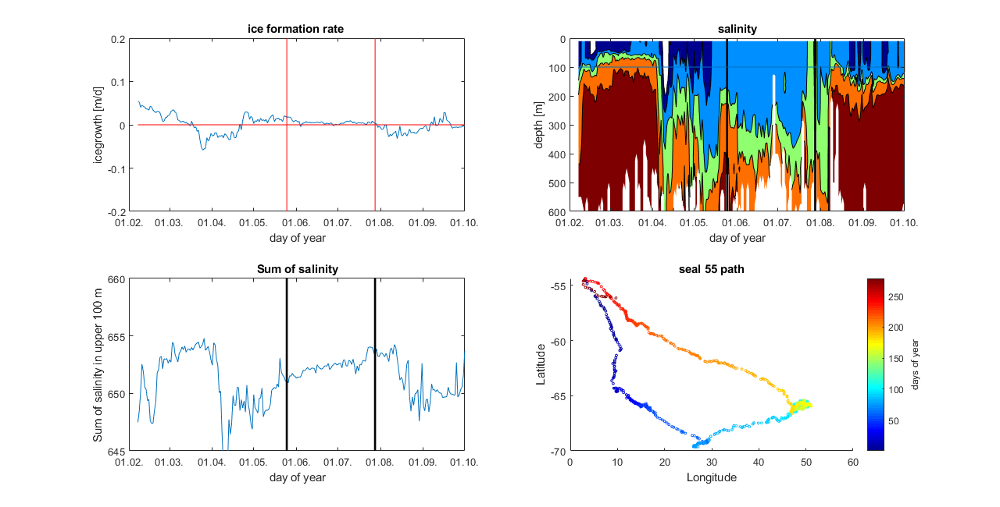
ice growth smoothed x time y
close; %Enter Sal depth and datex here salx=sal99; depthx=depth99; datex=date99; time0=1; timeend=240; %----------------------- [salsx2,timex,timenx]=smoothday(salx,depthx,datex); igx=ice_growth(salsx2,timex,1); %call function ice_growth subplot(2,2,1); XTickVec=datenum(2008,2:11,1); plot(timex(1:length(igx)),smooth2a(igx,1,3)); %smoothed over 3 days line([timex(1) timex(length(timex))], [0 0], 'color','r'); line([timex(time0) timex(time0)], [-0.2 0.2], 'color','r'); line([timex(timeend) timex(timeend)], [-0.2 0.2], 'color','r'); ylabel('icegrowth [m/d]'); xlabel('day of year'); title('ice formation rate '); set(gca,'XTick',XTickVec); datetick('x','dd.mm.','keepticks'); hold; subplot(2,2,2); contourf(timex,depthx,salsx2, 33.6:0.2:35.5); set(gca, 'ydir', 'reverse'); ylabel('depth [m]'); xlabel('day of year'); line([timex(time0) timex(time0)], [0 600], 'color','black', 'LineWidth', 2); line([timex(timeend) timex(timeend)], [0 600], 'color','black', 'LineWidth', 2); line([timex(1) timex(length(timex))], [100 100]); colormap jet; title('salinity'); set(gca,'XTick',XTickVec); datetick('x','dd.mm.','keepticks'); hold; subplot(2,2,3); %sum of salinity in upper 100 m plot(timex, nansum(salsx2(1:21,:))); ylim([645 660]); ylabel('Sum of salinity in upper 100 m'); xlabel('day of year'); line([timex(time0) timex(time0)], [0 700], 'color','black', 'LineWidth', 2); line([timex(timeend) timex(timeend)], [0 700], 'color','black', 'LineWidth', 2); title('Sum of salinity'); set(gca,'XTick',XTickVec); datetick('x','dd.mm.','keepticks'); subplot(2,2,4); %sealpath scatter(lon55,lat55,5,day55); title('seal 55 path'); xlabel('Longitude'); ylabel('Latitude'); h55=colorbar; ylabel(h55,'days of year'); colormap jet; % line([30 36], [-69 -69]); % line([30 30], [-69 -64]); % line([30 36], [-64 -64]); % line([36 36], [-69 -64]); set(gcf, 'Position', get(0, 'Screensize')); mean1_x=nanmean(igx(time0:timeend)); var1_x=nanvar(igx(time0:timeend)); sumx=nansum(igx(time0:timeend)); % ice growth from 4.4. to 30.5. (stable period) clear time0 timeend
Current plot held Current plot held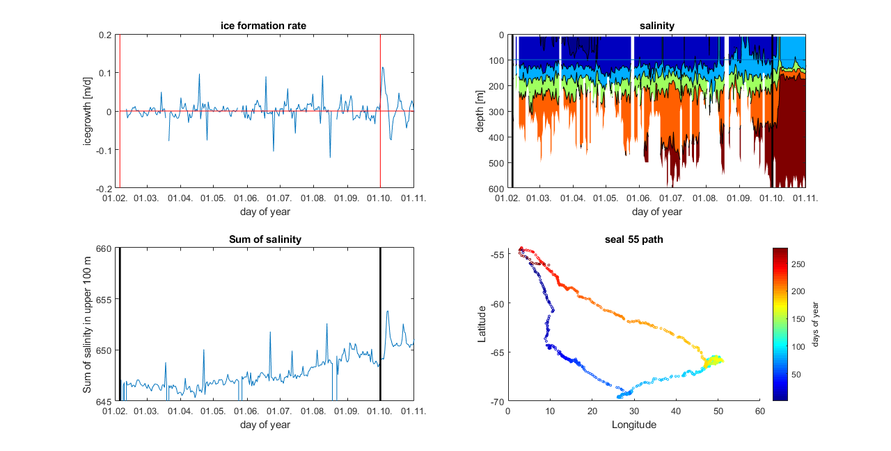
clear some stuff
clear o PTEMP P
to do
function ice growth rate overlay map with lat/lon data Sea ice modelling(FESOM) [Timmermann R, Danilov S, Schröter JA (2006) Geophys Res Abstr 8:07063]